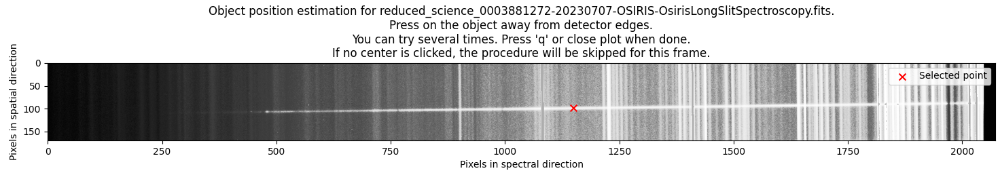
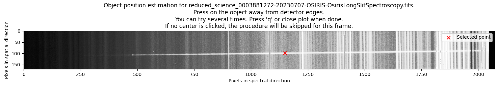
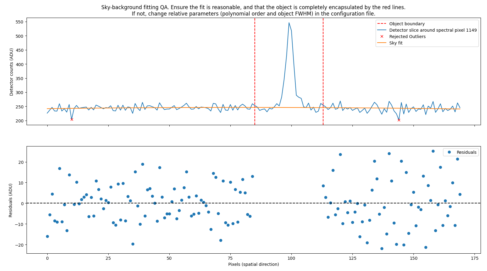
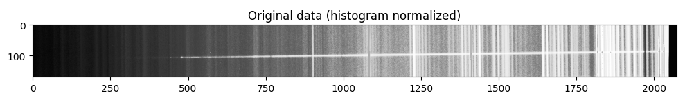
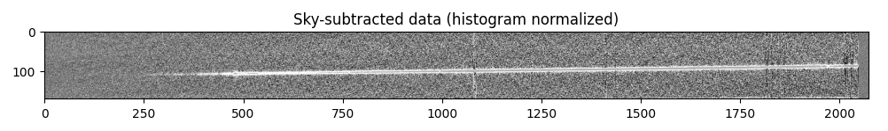

Modelled sky subtraction¶
Note
For some datasets, if you already have subtracted the sky bacground by using A-B background subtraction, you might be able to skip this step. This is the case for the SDSS_J213510+2728 tutorial dataset, where the sky subtraction by the A-B method is so succesfull, that practically all background is removed. However, for some datasets, you will need to perform this step even if you have already subtracted the sky background by the A-B method - inspect the files after the A-B routine to see if there is any remaining sky background. It is imortant to note that any procedure performed in the pipeline introduces some error noise (see note on uncertainties), so you must consider what is your best option, or test different approaches.
Quickstart¶
The procedure is called by the command:
pylongslit_sky_subtract PATH_TO_CONFIG_FILE
The procedure will estimate a sky-model using polynomial fitting, and subtract this model from the reduced files in the output directory specified in the configuration file. The procedure will alter the reduced files in-place. There are some interactive parts of the procedure, where you can also skip sky-subtraction for certain frames if you wish - this is explained in more detail below.
The procedure will start by plotting all the reduced frames one at a time, and you will have to mark the object center by clicking on the object trace. You can also choose to skip the sky-subtraction of a frame by not clicking on the object trace and simply closing the window. Below is an example of the interactive window for the GQ1218+0832 dataset, with prior and after object choice:
 

{kind=link}
From then on, the procedure will estimate the sky background using polynomial fitting, and subtract it.
Quality Assesment¶
The routine fits a polynomial to the sky background for every spectral pixel. A sample for one fit (corresponsing to the coordinates of the manually chosen object center) will be shown for quality assesment:
{kind=link}
A good fit is defined by:
Random residual spread around 0.
Very strong outliers rejected.
The object is encapsulated completely by the red lines.
The software will then plot the whole sky model:

And the observation frames before and after subtraction:
 {kind=link}
{kind=link}
The subtracted frame should show a clear reduction of the sky background, with the remaining background being mostly noise. The object should be clearly visible after subtraction, and should not be present in the sky-model.
Parameter options¶
These parameters can be adjusted in the configuration file to control the fit, with example values:
"sky" : {
"sigma_cut": 3,
"sigma_clip_iters": 5,
"fit_order": 2
},
"trace" : {
"object": {
"fwhm_guess": 4,
"fwhm_thresh": 2,
},
"standard": {
"fwhm_guess": 4,
"fwhm_thresh": 3,
}
}
The "sigma_cut" and "sigma_clip_iters" parameters control the rejection of outliers in the sky model fitting.
They are passed to astropy.stats.sigma_clip ,
where "sigma_cut" is the number of standard deviations to use for the rejection, and "sigma_clip_iters"
is the maximum number of iterations to perform (stops earlier if convergence is reached).
The "fit_order" parameter decides what order polynomial to fit to the sky background.
The "fwhm_guess" and "fwhm_thresh" parameters are used to estimate the limits of the objects
(can be set different for science and standard star frames). The red lines you see on the plot
above are defined as: object center +/- 3 "fwhm_guess" +/- "fwhm_thresh" (in pixels).
For users new to data reduction - short introduction to sky background¶
Sky background is the light from the sky and the atmosphere that is recorded by the detector together with the object spectrum. This background light covers the whole slit, and the bacground therefore shows itself as lines through the whole spatial direction (see above figures). The sky background consists both of strong sky lines (emission lines from the sky) and a continuum background. These sky lines/background are mixed into the object signal, and must be removed.